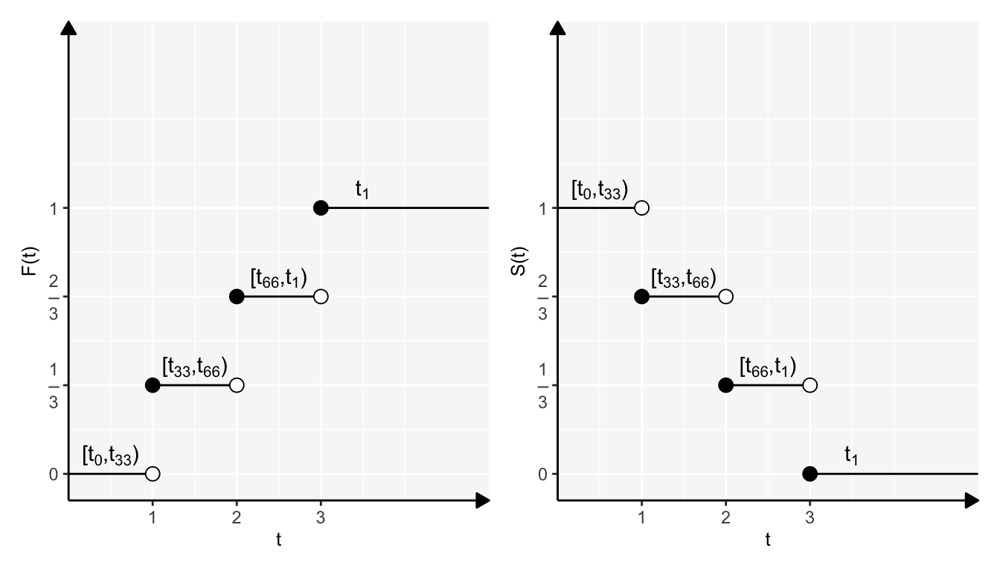
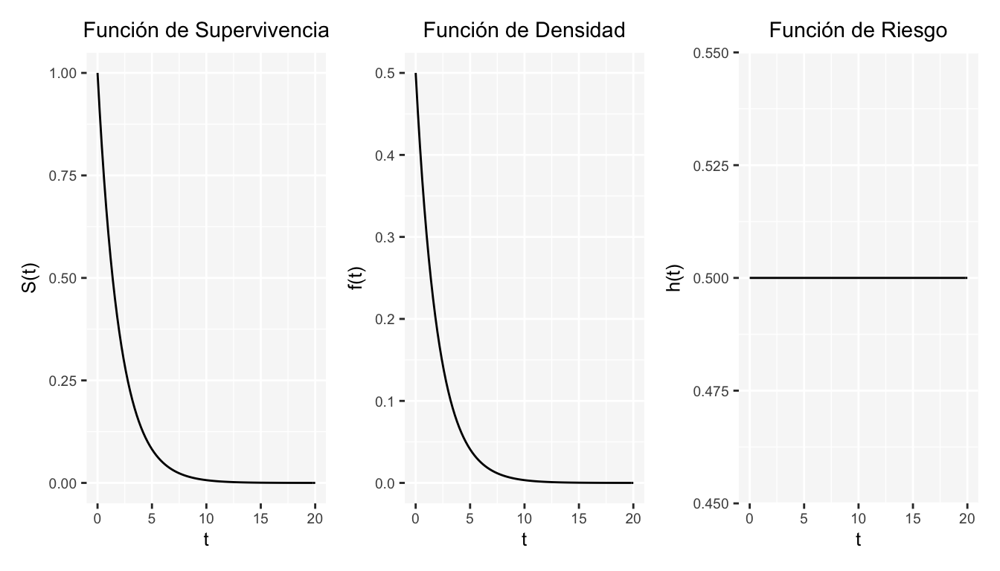
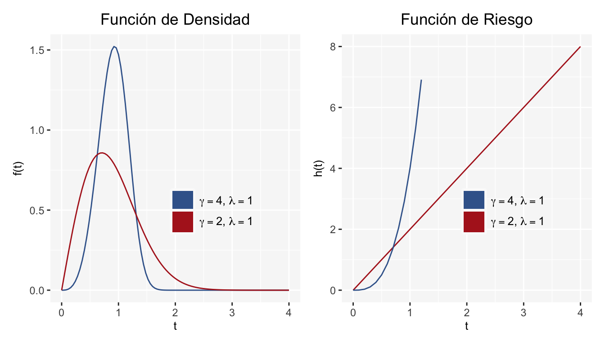
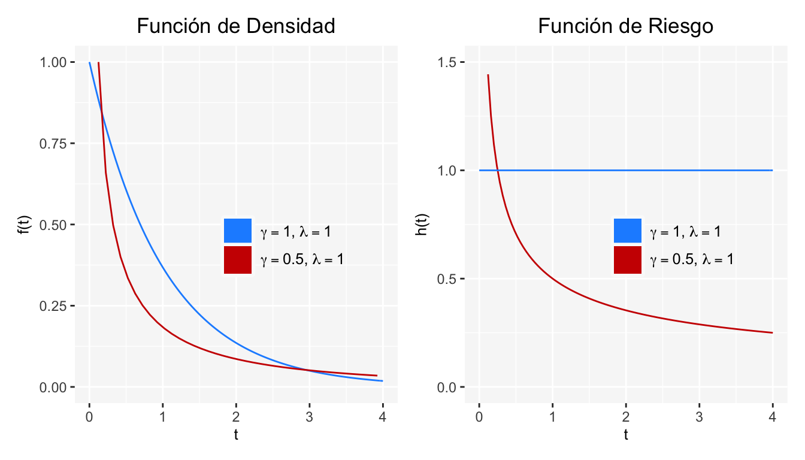
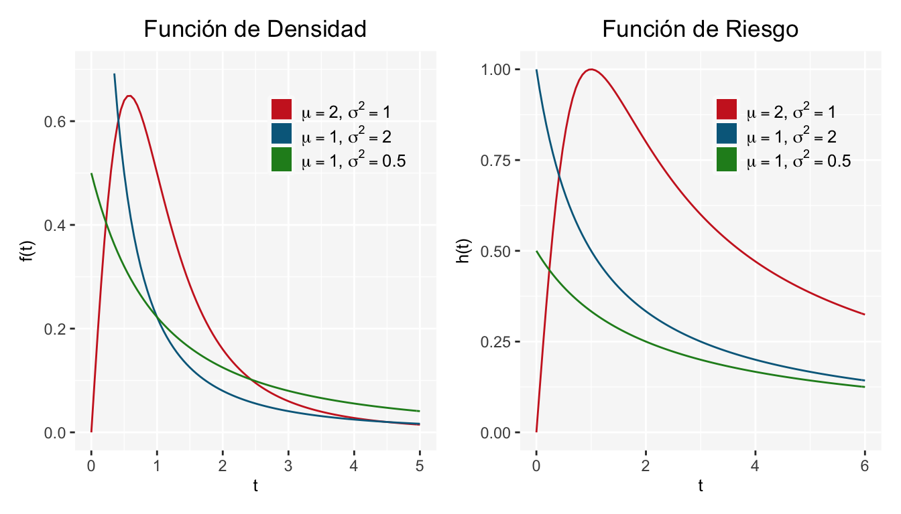
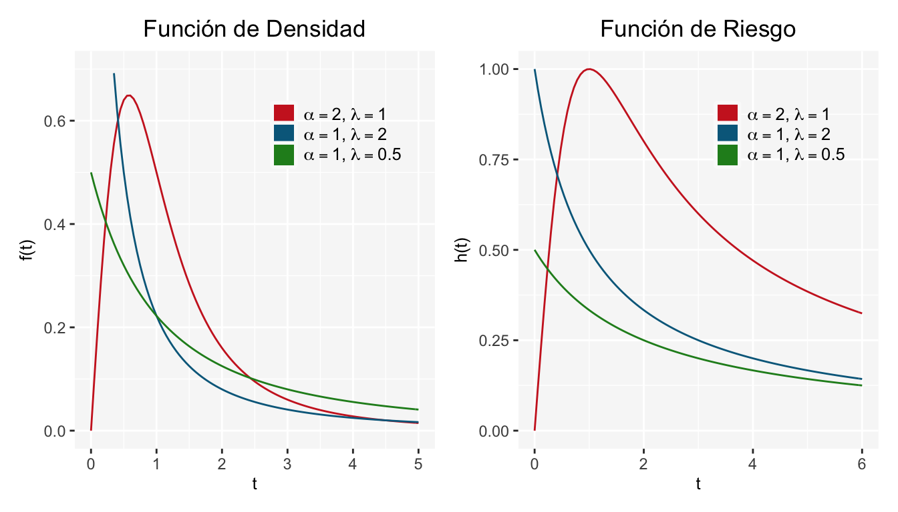

Capítulo 5 Modelos Paramétricos
Existen varios modelos paramétricos que se emplean en el análisis de supervivencia, esto se debe a que pueden representar de manera adecuada el comportamiento de ciertos fenómenos. La motivación para usar un modelo en particular es, por lo general, empírica; o bien, con base en la información que proporcione algún modelo No paramétrico. Las familias paramétricas más importantes son: Exponencial, Weibull, Log-Normal, Log-logística y Gamma.
5.1 Modelo Exponencial
El modelo exponencial es el más importante debido a su amplia aplicación, por ejemplo, puede emplearse en estudios para determinar el tiempo de vida útil de algunos artículos manufacturados. Este modelo juega un papel fundamental análogo a la distribución normal en la inferencia estadística tradicional.
Si asumimos una tasa de riesgo invariante en el tiempo, \(h(t)=\lambda\) con \(\lambda>0\), generamos el modelo exponencial:
Función de Riesgo
Tomamos \(\lambda>0\) y hacemos:
\[ h(t)=\lambda \]
Función de Supervivencia
\[ S(t)=exp\left(-\int_0^{t}h(u)du\right)=exp\left(-\int_0^{t}\lambda du\right)=exp(-\lambda t)=e^{-\lambda t} \]
Función de Densidad
\[ f(t)=h(t)S(t)=\lambda exp(-\lambda t)=\lambda e^{-\lambda t} \]
Aunque el supuesto de una función de riesgo constante resulta ser una restricción considerable, el modelo exponencial no deja de ser útil e importante en variedad de aplicaciones. Cabe destacar, que este modelo cumple con la propiedad de pérdida de memoria; a saber, se cumple que:
\[ \mathbb{P}(T>t+x|T>t)=\mathbb{P}(T>x) \]
Parámetros
Si \(T\sim Exp(\lambda)\) entonces:
\[ \mathbb{E}[T]=\int_{0}^{\infty}t\lambda e^{-\lambda t}dt=\frac{1}{\lambda} \]
Y
\[ Var[T]=\mathbb{E}[T^2]-\mathbb{E}[T]^2=\frac{2}{\lambda^2}-\frac{1}{\lambda^2}=\frac{1}{\lambda^2} \]
Gráficas
A continuación se muestran gráficas de una \(Exponencial\) con \(\lambda=0.5\)

5.2 Modelo Weibull
El modelo Weibull es una generalización del modelo exponencial, se agrega un parámetro de forma \(\gamma\) y se mantiene el parámetro de escala \(\lambda\). Este modelo es uno de los más utilizados para tiempos de falla: tiene utilidad en la vida de algunos artículos manufacturados, así como en los tiempos de aparición de tumores en medicina.
Si asumimos, en general, una función de riesgo monótona: creciente o decreciente, se puede obtener el modelo Weibull.
Función de Riesgo
Para este modelo \(h(t)\) está dada por:
\[ h(t)=\lambda \gamma(\lambda t)^{\gamma-1}; \ \ \ \gamma>0, \lambda>0 \mbox{ y } t>0 \] Función de Supervivencia
\[ S(t)=exp\left(-\int_0^{t}h(u)du\right)=exp\left(-\int_0^{t}\lambda \gamma(\lambda u)^{\gamma-1} du\right)=exp(-(\lambda t)^\gamma)=e^{-(\lambda t)^\gamma} \] Función de Densidad \[ f(t)=h(t)S(t)=\lambda \gamma(\lambda t)^{\gamma-1}e^{-(\lambda t)^\gamma} \]
Obsérvese que si \(\gamma =1\) entonces el modelo Weibull se reduce al modelo exponencial.
Parámetros
Si \(T\sim Weibull(\gamma,\lambda)\) entonces:
\[ \mathbb{E}[T]=\frac{1}{\lambda}\Gamma\left(\frac{1}{\gamma}+1\right) \]
Y además
\[ Var[T]=\frac{1}{\lambda^2}\Gamma\left(\frac{2}{\gamma}+1\right)-\left(\frac{1}{\lambda}\Gamma\left(\frac{1}{\gamma}+1\right)\right)^2 \\=\frac{1}{\lambda^2}\left[\Gamma\left(\frac{2}{\gamma}+1\right)-\left(\Gamma\left(\frac{1}{\gamma}+1\right)\right)^2\right] \] Debe resultar sencillo para el alumno demostrar las igualdades de la esperanza y varianza.
Gráficas
Las dos gráficas siguientes muestran curvas de \(f(t)\) y \(h(t)\) para el modelo Weibull con \(\lambda=1\) y \(\gamma=2,4\):

Y para el modelo Weibull con \(\lambda=1\) y \(\gamma=0.5,1\) se tienen las siguientes gráficas:

Como bien hemos dicho, si suponemos una función de riesgo monótona creciente ó decreciente la distribución Weibull puede ser generada. Concretamente, si \(\gamma>1\) entonces \(h(t)\) es estrictamente creciente, si \(\gamma<1\) entonces \(h(t)\) es estrictamente decreciente. Cuando \(\gamma=1\) se tiene la distribución exponencial.
5.3 Modelo Log-Normal
El modelo Log-Normal tiene estrecha relación con la distribución Normal. De hecho, el tiempo de supervivencia \(T\) se dice que sigue una distribución Log-Normal, si \(Y=ln(T)\) se distribuye \(N(\mu,\sigma^2)\).
La distribución Log-Normal se ha utilizado como modelo en el tiempo de falla de aislantes eléctricos y en el tiempo de aparición de cáncer pulmonar. También se utiliza en poblaciones que son una mezcla de tiempos de vida cortos y largos. A pesar de esto, este modelo es criticado por ser decreciente para valores grandes de \(t\), lo cual parece inadecaudo en algunas situaciones.
Función de Densidad
Para este modelo, \(f(t)\) está dada por:
\[ f(t)=\frac{1}{\sqrt {2\pi}\sigma t}exp\left(-\frac{1}{2}\left(\frac{ln(t)-\mu}{\sigma}\right)^2\right) \]
Función de Supervivencia
\[ S(t)=\int_t^{\infty}f(u)du \\=1-\int_0^{t}f(u)du \\=1-\int_0^{t}\frac{1}{\sqrt {2\pi}\sigma u}exp\left(-\frac{1}{2}\left(\frac{ln(u)-\mu}{\sigma}\right)^2\right)du \]
Tomando la notación de la función de distribución de una Normal estándar, \(\Phi()\), se tiene:
\[ S(t)=1-\Phi\left(\frac{ln(t)-\mu}{\sigma}\right) \]
Función de Riesgo
\[ h(t)=\frac{f(t)}{S(t)} \\=\frac{\frac{1}{\sqrt {2\pi}\sigma t}exp\left(-\frac{1}{2}\left(\frac{ln(t)-\mu}{\sigma}\right)^2\right)}{1-\Phi\left(\frac{ln(t)-\mu}{\sigma}\right)} \]
Si bien la expresión de \(h(t)\) parece ser complicada, su gráfica resulta ser más interesante. Ésta toma el valor de cero en \(t=0\), crece hasta un valor máximo y luego tiende a cero cuando \(t \rightarrow \infty\). Véase sección de gráficas.
Parámetros
Si \(T\sim LogNormal(\mu,\sigma^2)\) entonces:
\[ \mathbb{E}[T]=exp\left(\mu+\frac{\sigma^2}{2}\right) \]
Y además
\[ Var[T]=exp(2\mu+2\sigma^2)-exp(2\mu+\sigma^2) \]
La demostración de las igualdades de media y varianza se dejan al alumno.
Gráficas
A continuación algunos ejemplos de las gráficas de \(f(t)\) y \(h(t)\) para la distribución Log-Normal:

Ejemplo
El tiempo de muerte en días después de un trasplante de médula sigue una distribución \(log-normal\) con \(\mu = 3.177, \sigma = 2.084\). Calcular lo siguiente
- La media y la mediano tiempo de muerte
- La probabilidad de que un individuo sobreviva 200 días después de un trasplante.
Soluciones
- Mediana: \(t_{0.5} =e^{\mu}\) cuando \(T\sim log-normal \implies\) Mediana de tiempo de muerte: \(t_{0.5} = e^{3.177} = 23.97\).
- Media: \(\mathbb{E}(T) = e^{\mu+\sigma^2/2}\) cuando \(T\sim log- normal \implies\) Media de tiempo de muerte: \(\mathbb{E}(T) = e^{3.177+\frac{(2.084)^2}{2}} = 210.29\) días.
Entonces si sobrevivieron 23.97, queda una gran cantidad de días donde, en promedio son 210.29.
- \(S(200) = 1-\Phi\left(\frac{\ln(200)-3.177}{2.084}\right) = 1-0.8438 = 0.15436\).
5.4 Modelo Log-Logístico
El modelo Log-Logístico es derivado de la distribución Logística. Se dice que \(T\) tiene distribución Log-Logística si \(Y=ln(T)\) sigue una distribución Logística con parámetros \(\mu\) y \(\sigma ^2\).
Función de Densidad
\[ f(t)=\frac{\alpha \lambda t^{\alpha-1}}{(1+\lambda t^\alpha)^2} \]
con \(\alpha=\frac{1}{\sigma}\) y \(\lambda=exp(-\frac{\mu}{\sigma})>0\).
Función de Supervivencia
\[ S(t)=\frac{1}{1+\lambda t^\alpha} \]
Función de Riesgo
\[ h(t)=\frac{f(t)}{S(t)}=\frac{\alpha \lambda t^{\alpha-1}}{1+\lambda t^\alpha} \]
La función de riesgo es monótona decreciente para \(\alpha \leq 1\), y para \(\alpha> 1\) la función de riesgo crece hasta alcanzar un máximo en \(t=(\frac{\alpha-1}{\lambda})^{\frac{1}{\alpha}}\) y luego decrece a cero cuando \(t \rightarrow \infty\).
Gráficas
Algunos ejemplos de las gráficas de \(f(t)\) y \(h(t)\) para la distribución Log-Logística:

5.5 Modelo Gamma
La distribución Gamma, que incluye a las distribuciones exponencial y ji-cuadrada, ha sido utilizada como un modelo para problemas de confiabilidad industrial, hepatogramas en adultos normales y en pacientes con cirrosis, en supervivencia de plaquetas, entre otros. Este modelo tiene dos parámetros: \(\beta\) es el parámetro de forma y \(\lambda\) es el parámetro de escala.
Función de Densidad
\(f(t)\) está dada por:
\[ f(t)=\frac{\lambda^\beta}{\Gamma(\beta)}t^{\beta-1}exp(-\lambda t); \ \ \ \lambda,\beta>0 \]
Función de Supervivencia
\[ S(t)=1-lg(\lambda t, \beta) \]
donde:
\[ lg(t,\beta)=\frac{1}{\Gamma(\beta)}\int_0^{t}u^{\beta-1}e^{-u}du \] Al igual que un modelo \(Weibull(\lambda, alpha = 1)\), la distribución exponencial es un caso particular del modelo \(Gamma(\lambda,\beta = 1)\). Cuando \(\beta \rightarrow\infty\), modelo gamma se aproxima a una distribución normal.
Función de Riesgo
\[ h(t)=\frac{f(t)}{S(t)}=\frac{\frac{\lambda^\beta}{\Gamma(\beta)}t^{\beta-1}exp(-\lambda t)}{1-lg(\lambda t, \beta)} \]
Esta función de riesgo tiene distintos comportamientos:
- Es monótona creciente para \(\beta>1\). En este caso sucede que \(h(0)=0\) y \(\underset{t\rightarrow\infty}{h(t)} \rightarrow \lambda\). Además, la moda de la distribución es \(t = \frac{\beta-1}{\lambda}\)
- Es monótona decreciente con \(\beta <1\). En tal caso \(h(0) = \infty\) y \(\underset{t\rightarrow\infty}{h(t)} \rightarrow \lambda\).
Parámetros
Si \(T\sim Gamma(\beta,\lambda)\) entonces:
\[ \begin{array}{ccc} \mathbb{E}[T]=\frac{\beta}{\lambda} & \mbox{y} & Var[T]=\frac{\beta}{\lambda^2} \end{array} \]
Las demostraciones de las igualdades de la esperanza y varianza se quedan de ejercicio al alumno.
Gráficas
Se muestran ejemplos de las gráficas de \(f(t)\) y \(h(t)\) para el modelo Gamma:

5.6 Modelo Gamma Generalizada
Finalmente, se presenta el modelo Gamma Generalizada con parámetros \(\alpha\), \(\beta\) y \(\lambda\).
Función de Densidad
\(f(t)\) está dada por:
\[ f(t)=\frac{\alpha\lambda^\beta}{\Gamma(\beta)}t^{\alpha\beta-1}\exp(-\lambda t)^\alpha; \ \ \ \lambda,\beta>0 \]
Función de Supervivencia
\[ S(t)=1-lg(\lambda t^\alpha, \beta) \]
Esta distribución se reduce a las siguientes
- \(Exponencial\) cuando \(\beta = \alpha = 1\).
- \(Weibull\) cuando \(\beta = 1\).
- \(Gamma\) cuando \(\alpha = 1\).
- Tiende a la log-normal cuando \(\beta\rightarrow\infty\).
Ejemplo
El tiempo de vida en meses de cierta especie de ratón sigue una distribución \(gamma(\beta = 3, \lambda = 0.2)\).
- Calcular la probabilidad de que un ratón sobreviva más de 18 meses.
- ¿Cuál es la probabilidad de que un ratón muera en el primer año de vida?
- ¿Cuál es la esperanza de vida media de esta especia?
Soluciones
- \(S(18) = 1-F(18) = 1-.69 = .31\)
- \(F(12) = .43\)
- \(\mathbb{E}(T) = \frac{\beta}{\lambda} = \frac{3}{0.2} = 15\) meses.
Cabe señalar que hasta este punto no hemos introducido datos censurados a los modelos.